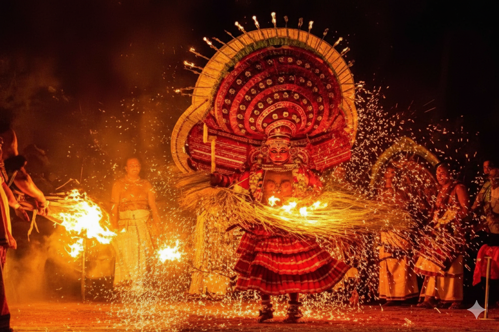

Beyond Sightseeing:
5 Sensory Experiences You Must Try in Kerala
27 December 2025
Kerala’s beauty isn’t just for youreyes—it’s for your nose, ears, tongue, skin, and that hard-to-name sixth sense.Here are five sensory adventures that hit different when you close theguidebook and open your senses.

1. Taste: FreshCoconut Ladder (Taste + Smell)
Ask a local to climb a coconut tree. Watch themshimmy up barefoot, machete between teeth. The first crack releases a sweet,floral aroma—pure tropical sunshine. Drink straight from the shell, spoontender flesh. Then level up with Kerala beachside specials: karimeenpollichathu (pearl spot fish grilled in banana leaf), prawns roast with darkmasala clinging to juicy shells, netholi fry (anchovies crisp in coconut oil),and fish moilee (mild coconut milk curry). Pair with appam (fermented ricepancake) or pathiri (layered rice flatbread). No bottle, no plastic—justflavors that make your tastebuds dance for hours.
2. Smell: SpicePlantation Dawn Walk (Smell)
5 AM plantation trek through cardamom, pepper, clove, and coffee groves. Wet earth, dew-heavy leaves, and spice flowers release their oils in morning coolness. Crush a cardamom pod between fingers—explosion. Rub coffee blossom on wrist—perfume. Locals harvest silently; you breathe the world’s flavor before it’s packaged. Cardamom hills smell like secrets. Lasts hours on skin, memory lasts forever.
3. Sound: Theyyam Ritual Night (Sound)
Village theyyam isn’t theater—it’s trance. Midnight temple courtyard. Drums thunder, copper trumpets wail, fire crackles. Gods descend in 10-foot costumes, eyes roll wild, feet stomp earth. Bell-metal clangs, chants rise and fall. No script, no stage—raw devotion pounds your chest. Stay till 3 AM. Silence after feels holy. Better than any concert.
4. Touch: Ayurvedic Oil Bath (Touch)
Full-body sesame-coconut oil massage on hardwood table. Heated oils seep into muscles while strong hands work out city stress. The slip, the warmth, the pressure—the body feels liquid. Steam bath follows, skin drinks moisture. Lie wrapped in cotton for hours letting it absorb. Walk out feeling taller, lighter, grounded. Effects of the last days. Book village clinics over resorts.
5. Sixth Sense: Houseboat Night Drift (All Senses)
Board backwater houseboat at dusk. Coconut trees silhouette against the purple sky. Drift silently—no engine after dark. The lantern glows soft. Karimeen frying sizzles in the kitchen. Waves lap wood gently. Frogs chorus from banks. Stars reflect in still water. No WiFi, no horns, no plans. Lie on deck feeling the earth rotate beneath. Couples hold hands tighter. Kids fall asleep smiling. Time stops.
Why senses beat sightseeing
Photos fade. Maps expire. Sights blend together. But tasting coconut water from a tree you watched get cut, smelling cardamom wet with morning dew, hearing theyyam drums shake your bones—these write themselves into muscle memory. Kerala doesn’t want your eyes; it wants all of you.
Locals live sensoryly—they don’t Instagram their spice harvest or record theyyam. Copy them. Skip the checklist. Chase smells, sounds, tastes. The memories that stick aren’t framed—they’re felt.